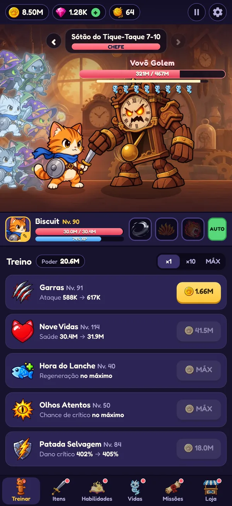
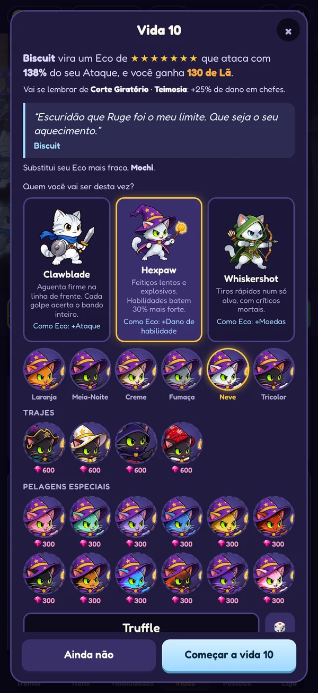
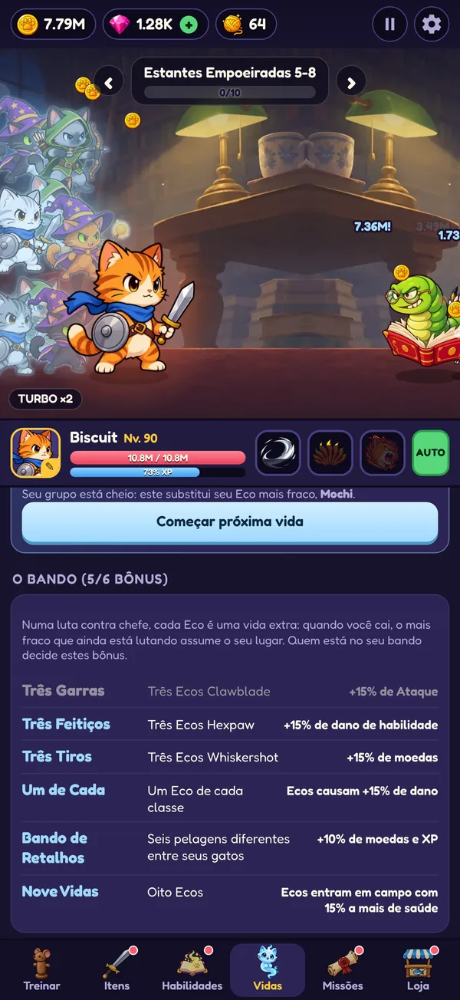
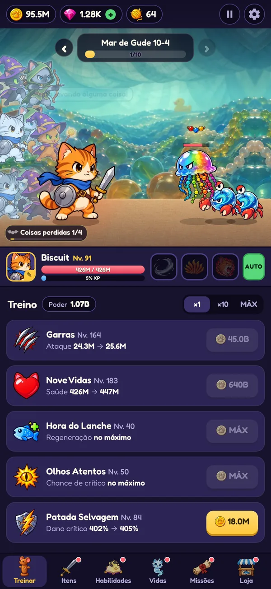
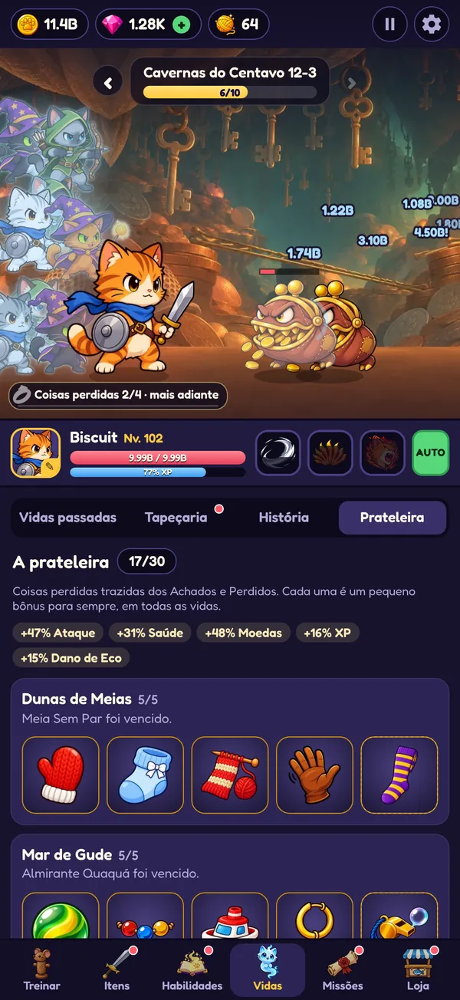
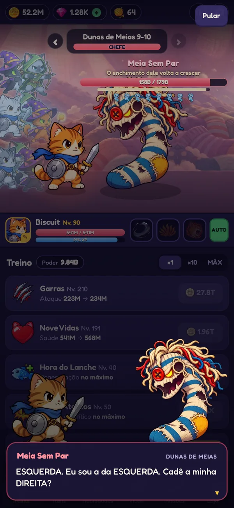

Pawst Lives
O RPG idle em que o seu grupo são as suas próprias vidas passadas.
Um gato tem nove vidas. As suas lutam todas ao mesmo tempo. Quando uma vida chega o mais longe que pode, você começa a próxima, e o gato que você foi volta como um Eco: um fantasma que luta ao seu lado dali em diante.
Baixar na App Store: grátisPara iPhone e iPad. Sem anúncios. Sem conta. Funciona offline.

Nove gatos. Um herói. Todos seus.
Quando as luzes se apagam, a casa vira uma masmorra. O irrigador do jardim é uma hidra. A torradeira é um dragão. E em algum lugar no escuro embaixo da escada, o aspirador está esperando.
Viva uma vida
Jogue como Clawblade, Hexpaw ou Whiskershot. Seu gato luta sozinho enquanto você o treina, equipa nele o que ele encontra e escolhe a hora das habilidades.
Termine bem
Quando um chefe não cair, comece a sua próxima vida. Quanto mais longe a anterior chegou, mais forte é o Eco que ela deixa.
Lute ao lado dos seus fantasmas
Até oito Ecos se juntam a você, cada um guardando a habilidade que mais treinou. Se você cair diante de um chefe, um Eco assume o seu lugar: cada um é uma vida extra.
Como é o jogo
Cada imagem aqui é o jogo como ele roda em um iPhone. Em um iPad é o mesmo jogo, ocupando a tela toda.






Idle quando quiser, na mão quando não
Ele se joga sozinho quando você não tem tempo e recompensa quando você tem.
Uma casa assombrada
Oito cômodos, do Portão do Jardim à Escuridão que Ruge, cada um com seus monstros e seu chefe. Caranguejos de Lata. Duendes de Meia. Uma máquina de lavar com tentáculos.
Sempre há algo para melhorar
Treine cinco atributos, evolua três habilidades por classe, aprimore quatro peças de equipamento e teça na Tapeçaria melhorias que nunca são zeradas.
Forme um bando
Bônus por três Ecos da mesma classe, um de cada classe, seis pelagens diferentes ou os oito completos.
Sonecas, não tarefas
Se você sair, seus gatos tiram uma soneca. Na volta você encontra umas moedas e um gato descansado que ganha em dobro por um tempo.
Toque, escolha a hora ou deixe rolar
Dê o bote em um inimigo, guarde uma habilidade para a hora certa ou deixe tudo no automático.
Coisas grátis todo dia
Missões diárias, façanhas para a vida toda e um presente diário, tudo rendendo gemas que você nunca precisa comprar.
Justo e tranquilo
Feito por uma pessoa só, que queria um jogo que deixasse você em paz.
- Sem anúncios
- Sem conta
- Sem rastreamento
- Funciona offline
Nada é coletado sobre você: a etiqueta de privacidade do jogo na App Store diz que nenhum dado é coletado, e a política de privacidade (em inglês) cabe em uma página. É grátis, com seis compras opcionais (gemas e duas melhorias de pagamento único que duram para sempre) e sem assinaturas. Nada no jogo precisa delas, e nada do que você compra depende de sorte: não há caixas de recompensa.
iPad, mais cinco idiomas e nada de sorte na Loja
- iPad. O jogo inteiro, ocupando a tela toda.
- Seu jogo acompanha você. Fica guardado no seu próprio iCloud além do seu aparelho, então um iPhone novo ou um iPad encontra seus gatos onde você os deixou. Continua sem conta.
- Português (Brasil), espanhol, francês, alemão e japonês. O jogo inteiro, com a história. Ele segue o idioma do seu aparelho, e em Ajustes há um cartão de Idioma se você preferir jogar em outro.
- Sem caixas de recompensa. O Baú de Itens não depende mais de sorte: ele mostra as quatro peças de equipamento e você escolhe uma.
- Lembretes, se você quiser. Desligados até você ligar.
Perguntas
O Pawst Lives é grátis?
Sim. O download é grátis e dá para jogar até o fim sem pagar. Há seis compras opcionais no app: quatro pacotes de gemas e duas melhorias de pagamento único que duram para sempre. Não há assinaturas.
Tem anúncios?
Não. Não há anúncios de nenhum tipo, e nunca houve.
Dá para jogar offline?
Sim. O jogo inteiro funciona sem conexão. Quando há conexão, as recompensas diárias conferem a data real.
O que é um RPG idle?
Um RPG que continua andando sozinho. No Pawst Lives seus gatos lutam por conta própria; você decide o que treinar, o que equipar neles, quando usar uma habilidade e quando uma vida já foi longe o bastante para começar a próxima.
Preciso de uma conta? O que ele coleta?
Não há conta nem login, e o jogo não coleta nada sobre você. Veja a política de privacidade (em inglês).
Tem para iPad ou Android?
Ele roda em iPhone e iPad, e um jogo guardado no seu iCloud passa de um para o outro. Não há versão para Android.
Em que idiomas ele está?
Português (Brasil), inglês, espanhol, francês, alemão e japonês. O jogo segue o idioma do seu aparelho, e em Ajustes há um cartão de Idioma para escolher outro.
Algo não está funcionando. Onde consigo ajuda?
A página de suporte (em inglês) fala de jogos salvos, compras e como passar de um chefe, e tem um endereço para escrever.